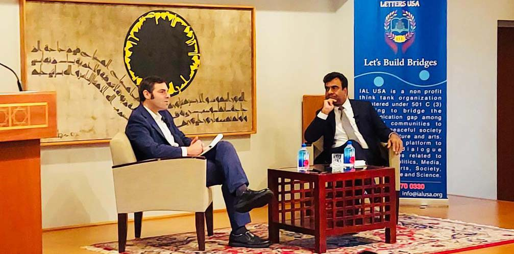

About IAL USA
Founded in 2017,International Academy of Letters USA, is a U.S. based not-for-profit and non- governmental think tank organization committed to promoting cultural and public diplomacy through dialogue. It works to achieve global peace by strengthening intercultural relations among nations, countries, communities and people.
Our Principles
- Build bridges through public and cultural diplomacy
- People to people contact and culture to culture relationship
- Pursuance of harmony and global peace through dialogue
- Bridging divides and fostering global unity through cultural exchange and collaboration
- Facilitating intercultural dialogue and cooperation for a more peaceful and interconnected world
Our Mission
Increase understanding and bridge communication gap among nations, countries, communities and people through public and cultural diplomacy.
IAL USA Principles
Communities are ONE
At IAL USA we are working together to bring communities closer and work towards our objectives collectively
Relationships
- People to people contact and culture to culture relationships
Respect
- Respect and Recognition of cultural diversity
Dialogue
- Global intercultural dialogue
Peace
- Pursuance of global peace and protection of human rights

Promoting Cultural Relationships
- Explore the dialogue and interface between literature and the arts that shape our cultural, social, economic, and political frameworks.
- Promote arts & literature and explore the interconnections between literature and art, theater, films, music, television, journalism, and political activism.
- Undertake aid, support, assist, promote, manage, research, and encourage projects or programs related to literature, art, journalism, philosophy, and political activism that can promote peace, cohesion, integration among various communities.
- Preserve, promote and foster study in literature, arts, music, poetry, journalism, and architecture, and to give awards, scholarships, and prizes for their encouragement.
- Organize International Festival of Literature and Peace on an annual basis.
- Promote, manage, organize and hold events, meetings, carnivals, festivals, lectures, seminars, workshops, discussion forums, and research related to and for the promotion of literature, poetry, journalism, cinema, cultural heritage, and promote writers, authors, philosophers, thinkers, and artists.
- Set up libraries and study centers for promoting literature and to encourage, promote, create and manage book clubs and think tanks and work toward the development and preservation of literature, culture, and history.
- Conserve and promote an awareness of the rich cultural heritage of Pakistan with a focus on literature, arts, music, dance, festivals, rituals, games, architecture, mythology, and philosophy.
Literature & Peace
- Create a platform to promote intercultural dialogue among countries and communities
- Establish relationship, partnership and alliances with think tanks, media and academia at national and state level
Institute for Public Diplomacy
Institute for Cultural and Public Diplomacy acts a platform to promote diplomacy. It brings academics, writers, intellectuals, diplomats and politicians from across the world to share ideas, publish research and grow networks.
- This platform aims to advance public diplomacy, by combining dialogue, research, and practice in order to provide evidence-based information and guidance in the public diplomacy field. It provides a direct channel of interaction among cultural activists, media, NGOs, academics, politicians, writers, authors, and others seeking to advance the field of international virtual exchange.
- Through our balanced public diplomacy programs and publications, the center encourages citizens to participate in the cultural and policy process.
- The center organizes international conferences on salient issues in international relations, global economy, culture, and human rights.
- The center pursues its objectives by interacting with public and private organizations from all parts of the world.
- Diplomacy ecosystem, through partnerships among policymakers and civil society.
Programs/Activities
The center pursues its objectives by interacting with public and private organizations from all parts of the world and by organizing dialogues, conferences, seminars and book sessions
Social Integration
OUR PHILOSOPHY
IAL USA, under the supervision of its President/CEO and the Board , works toward its stated objectives through the following means:
- By establishing and developing relations with national and international think tank organizations/institutions and by promoting and organizing cultural-exchange activities and programs with and between other states, provinces, countries and people
- By collaborating with writers, thinkers, academia, and professionals in relevant fields for promoting literature, poetry, culture, heritage, history, arts, theater, film, and journalism, and working for the diffusion of literature and knowledge to all or part of the public.
- By having dialogue with with diplomats, writers, authors, thinkers and intellectuals on politics, media, books, society, literature and arts
- By organizing Literature Festivals, conferences, seminars, Meet the Authors/Diplomats By documenting, researching, surveying and publishing books, periodicals, research papers on international affairs, cultural and public diplomacy, literature, poetry, art, theater, films, music, dance, television, journalism, cinema, cultural heritage, mythology, architecture, and philosophy.
WE BELIEVE IN WORKING
- By liaising with relevant governmental agencies as well as established and well-reputed nonprofit organizations to achieve or promote the objectives stated herein.
- By a Fund created by raising capital through donations and fundraising initiatives.
- By establishing a Center for Cultural & Public Diplomacy, organize dialogue on different topics. This center will act as a platform for the promotion of Public & Cultural Diplomacy by engaging experts of different fields.
- By organizing sessions with leaders, writers, diplomats, politicians, historians, authors and artists to promote cultural and public diplomacy
Our Events


Leadership & Governance


ADVISORY BOARD

Ronan OMalley
Director of ProgramDirector of Programs & Director of the Global Affairs and U.S. Foreign…
Read MoreAizaz Ahmad Chaudhry
Pakistani DiplomatAizaz Ahmad Chaudhry is a senior Pakistani diplomat and Director General of Institute of…
Read More
Salman Razzaqi
Renowned Businessman and PhilanthropistSalman Razzaqi is a renowned businessman and philanthropist. He is the president…
Read More
Dr. Akbar S. Ahmad
Pakistani-American AcademicDr. Akbar Salahuddin Ahmed, is a Pakistani-American academic, author, poet, playwright, filmmaker and former…
Read MoreGet Involved
Donate
Become a Volunteer